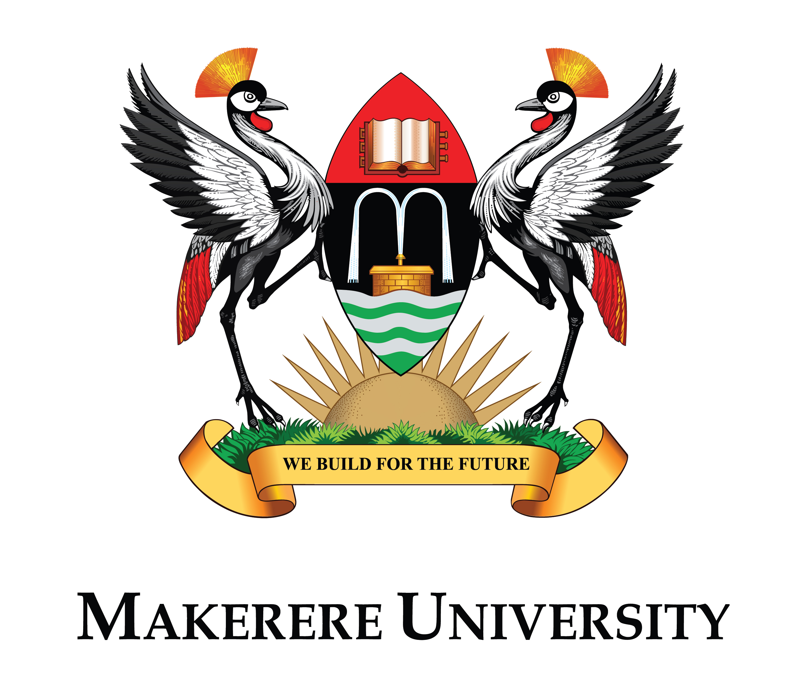

Our Partners

Conference Theme:
“Accelerating Market-Driven Innovation for Uganda's Development”
24th - 26th June, 2026
The Uganda Communications Commission (UCC), in collaboration with Makerere University, is pleased to announce the 10th National Conference on Communications (NCC 2026). This milestone edition marks a decade of fostering research, innovation, and knowledge exchange within Uganda's ICT ecosystem.
Since its inception in 2010, the NCC has evolved into Uganda's premier platform for presenting peer-reviewed research, facilitating policy dialogue, and showcasing homegrown ICT solutions. The conference brings together academia, industry, government, and students to address the most pressing challenges and opportunities in Uganda's communications sector.
The 2026 theme, “Accelerating Market-Driven Innovation for Uganda’s Development,” emphasizes the critical need to align research and innovation with market realities and national development priorities. This theme reflects Uganda’s commitment to leveraging ICTs as a catalyst for achieving the Uganda Vision 2040 and the objectives of the National Development Plan IV (NDP IV).
Papers are invited across the following thematic tracks. Each track encompasses multiple sub-themes to encourage comprehensive exploration of market-driven innovation in Uganda’s communications sector:
Focus: Innovations in physical and logical network infrastructure and technologies that enhance national connectivity and digital access.
Sub-themes:
Focus: Technologies transforming financial access, inclusion, trust, and digital economic participation.
Sub-themes:
Focus: The evolving media landscape, content creation, distribution platforms, and creative digital experiences.
Sub-themes:
Focus: AI, data analytics, ethical considerations, language computing, and secure digital systems.
Sub-themes:
Focus: Digital transformation of public services, smart city frameworks, participatory governance, and urban tech.
Sub-themes:
Focus: ICT innovations that directly support wellbeing, learning, skills development, inclusion, and social systems.
Sub-themes:
Focus: ICT’s role in enhancing agricultural productivity, sustainability, and climate resilience.
Sub-themes:
Focus: The frameworks that enable safe, inclusive, competitive, and sustainable digital transformation as well as technology ventures.
Sub-themes:
We invite researchers, practitioners, innovators, policymakers, and students to submit original research papers, case studies, and technical reports that contribute to advancing Uganda’s digital transformation agenda.
Types of Submissions:
We welcome the following types of submissions:
Paper Formatting Requirements:
Review Process:
All submissions will undergo a rigorous peer-review process:
Publication and Presentation:
| Milestone | Date |
|---|---|
| Call for Papers Opens | Wednesday, February 18, 2026 |
| Abstract Submission Deadline (Optional) | Friday, March 21, 2026 |
| Full Paper Submission Deadline | Friday, May 1, 2026 |
| Review Results Notification | Friday, May 22, 2026 |
| Camera-Ready Paper Submission | Friday, June 5, 2026 |
| Author Registration Deadline | Friday, June 15, 2026 |
| Conference Dates | June 24–26, 2026 |
Note: All deadlines are at 23:59 PM East Africa Time (EAT). Late submissions will not be considered.
Submission Platform
All papers must be submitted electronically through the conference submission portal:
https://easychair.org/conferences/?conf=ncc2026
Authors will need to create an account on the submission system.
Download the official NCC 2026 paper template (Download Word Template | Download LaTeX Template).
Learn from experienced editors and publishers about getting your research published in top-tier journals and conferences. Covers peer review processes, writing techniques, and publication strategies.
A platform for high school students across the different parts of the country to showcase innovative ICT projects. Winners receive recognition, prizes, and opportunities to present at the main conference.

Have questions about paper submission, pre-conference activities, or partnership opportunities? Contact us below.